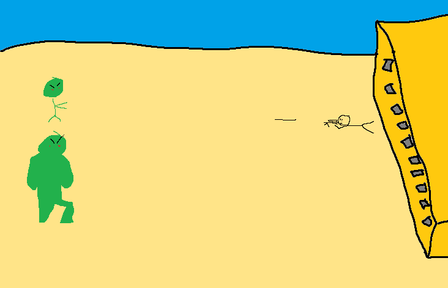
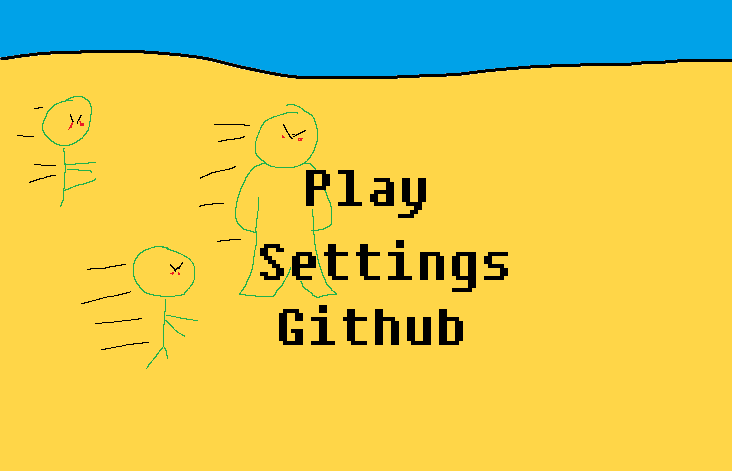

Untitled Tower-Defense Game
High Concept
This is a wave-based one-screen tower-defense game where waves of enemies try to attack and destroy the player's base.
Genre
Action/Tower-Defense
Platform
Desktop only.
Story
There is no story to this game, although it is set in a post-apocalyptic ruins where a bunch of zombies are trying to breach your sanctuary.
Esthetics
The environment has a post-apocalyptic esthetic to it and will feature zombies as the enemies as well as humans as the operators to it's Borderlands styled towers.
Gameplay
Gameplay Mechanics
Players will start the game with an undetermined amount of points which they can spend on towers to protect their base. Players will then be able to spawn a wave of enemies which will become progressively harder as the wave number increases. Between and during rounds, players will be able to purchase more towers and upgrade existing towers using the points they have accumulated. Points will be earned by defeating enemies with stronger enemies rewarding inreasing amounts of points based off of their difficulty.
Enemy Mechanics
Enemies will spawn on the left side of the screen and make a break for the player's base on the right side of the screen. The enemies will approach the base and repeatedly attack it upon reaching the walls. Enemies will spawn as different types of classes including a medium-health, medium-speed generic enemy, a high-health, low-speed tanky enemy, and a high-speed, low-health, fast enemy. Enemy types will become more and more diverse as the wave number increases with the game starting only with generic enemies.
Controls
All controls will be accessable via clicking buttons on the screen with some hotkeys such as s to sell and 1-5 to select towers.
Screenshots
 Other
I'm not sure what this will be coded in as of now.
About the Developer(s)
Jack Hoffman
Game Design and Development Major/Music Performance Minor: 2nd Year